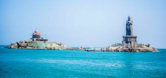
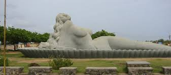
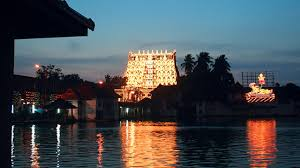
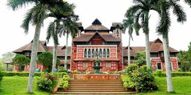

Thiruvanathapauram, commonly known by its former name Trivandrum, is the capital of Kerala. Located on the west coast of India near the extreme south of the mainland, Thiruvananthapuram is a major information technology hubin Kerala. Referred to by Mahatma Gandhi as thr "Evergreen city of India", the city is characerised by its undulating terrain of lw coastal hills.
|


|
How to reach |
|
|
Air:
The nearest International airport is Trivandrum International Airport (7km) and vizhinjam International Seaport(22.9km)
|
|
Rail:
Trivandrum Railway division has a total length of 625km and railway routes merging the junction. So it plays an important transit point in south India
|
|
Road:
Three important National Highways NH47 (leading to North), MC Road (Kesavadasapuram to Angamaly) and Bipass Road (Kovalam to North). Two major bus stands are Thampanoor Bus Stand & Eastfort Bus Stand (Local Routes)
|
Places of interests |
|
Sree Padmanabha Swamy Temple
The Padmanabhaswamy temple is a Hindu temple located in Thiruvananthapuram, state capital of Kerala, India. The name of the city of Thiruvananthapuram in Malayalam translates to "The City of Lord Ananta", referring to the deity of the Padmanabhaswamy temple |

know more
|

know more |
Museum & Zoo
The Department of Museums and Zoos is functioning under the Administrative Control of the Cultural Affairs Department, Government of Kerala. It has the Directorate, Museums, Galleries, Botanical Garden as well a Zoological Park in Thiruvananthapuram City and two regional institutions viz. State Museum and Zoo at Thrissur and Art Gallery and Krishna Menon Museum at Kozhikode |
Sree Chithra Art Gallery
Sree Chitra Art Gallery is an art gallery in Thiruvananthapuram, India, established in 1935. It is located towards the northern side of the Napier Museum. It was inaugurated by Chithira Thirunal Balarama Varma. |
know more |